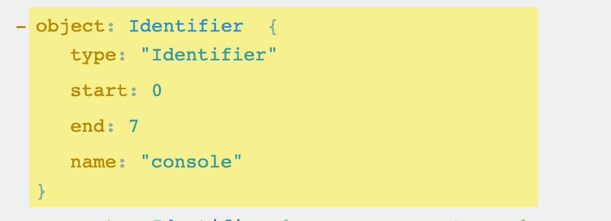

说说sourcemap的原理？
参考答案
Source map 想必大家都不陌生。线上的代码多是压缩后的，如果线上有报错却只能调试那个代码多半是个噩梦。因此我们需要有一个桥梁帮助我们搭建起源代码及压缩后代码的联系，source map 就是起了这个作用。
以下是 MDN 对于 source map 的解释：
调试原始源代码会比浏览器下载的转换后的代码更加容易。 source map 是从已转换的代码映射到原始源的文件，使浏览器能够重构原始源并在调试器中显示重建的原始源。
但是不知道大家有没有对 source map 的原理产生过疑问？先列出了四个疑问，不知道各位是不是也存在过这样的问题：
接下来的内容会逐步为读者解答这四问。
source map 文件是否影响网页性能
这个答案肯定是不会影响，否则构建相关的优化就肯定会涉及到对于 source map 的处理了，毕竟 source map 文件也不小。
其实 source map 只有在打开 dev tools 的情况下才会开始下载，相信大部分用户都不会去打开这个面板，所以这也就不是问题了。
这时可能会有读者想说：哎，但是我好像从来没有在 Network 里看到 source map 文件的加载呀？其实这只是浏览器隐藏了而已，如果大家使用抓包工具的话就能发现在打开 dev tools 的时候开始下载 source map 了。
source map 存在标准嘛？
source map 是存在一个标准的，为 Google 及 Mozilla 的工程师制定，文档地址。正是因为存在这份标准，各个打包器及浏览器才能生成及使用 source map，否则就乱套了。
各个打包器基本都基于该库来生成 source map，当然也存在一些魔改的方案，但是标准都是统一的。
通过上面的库生成出来的 source map 格式大致如下，大家也可以对比各个打包器的产物，格式及内容大部分都是一致的：
{
version: 3,
file: "min.js",
names: ["bar", "baz", "n"],
sources: ["one.js", "two.js"],
sourceRoot: "http://example.com/www/js/",
mappings: "CAAC,IAAI,IAAM,SAAUA,GAClB,OAAOC,IAAID;CCDb,IAAI,IAAM,SAAUE,GAClB,OAAOA"
}接下来介绍下重要字段的作用：
- version：顾名思义，指代了版本号，目前 source map 标准的版本为 3，也就是说这份 source map 使用的是第三版标准产出的
- file：编译后的文件名
- names：一个优化用的字段，后续会在 mappings 中用到
- sources：多个源文件名
- mappings：这是最重要的内容，表示了源代码及编译后代码的关系，但是先略过这块，下文中会详细解释
另外大部分应用都是由 webpack 来打包的，可能有些读者会发现 webpack 的 source map 产出的字段于上面的略微有些不一致。
这是因为 webpack 魔改了一些东西，但是底下还是基于这个库实现的，只是变动了一些不涉及核心的字段，具体代码。
浏览器怎么知道源文件和 source map 的关系？
这里我们以 webpack 做个实验，通过 webpack5 对于以下代码进行打包：
// index.js
const a = 1
console.log(a);当我们开启 source map 选项以后，产物应该为两个文件，分别为 bundle.js 以及 bundle.js.map。
查看 bundle.js 文件以后我们会发现代码中存在这一一段注释：
console.log(1);
//# sourceMappingURL=bundle.js.mapsourceMappingURL 就是标记了该文件的 source map 地址。
当然除此之外还有别的方式，通过查阅 MDN 文档 发现还可以通过 response header 的 SourceMap: <url> 字段来表明。
source map 是如何对应到源代码的？
这是 source map 最核心的功能，也是最涉及知识盲区的一块内容。
大家应该还记得上文中没介绍的 mapping 字段吧，接下来我们就来详细了解这个字段的用处。
我们还是以刚才打包的文件为例，来看看产出的 source map 长啥样（去掉了无关紧要的）：
{
sources:["webpack://webpack-source-demo/./src/index.js"],
names: ['console', 'log'],
mappings: 'AACAA,QAAQC,IADE',
}首先 mappings 的内容其实是 Base64 VLQ 的编码表示。
内容由三部分组成，分别为：
- 英文，表示源码及压缩代码的位置关联
- 逗号，分隔一行代码中的内容。比如说
console.log(a)就由console、log及a三部分组成，所以存在两个逗号。 - 分号，代表换行
逗号和分号想必大家没啥疑问，但是对于这几个英文内容应该会很困惑。
其实这就是一种压缩数字内容的编码方式，毕竟源代码可能很庞大，用数字表示行数及列数的话 source map 文件将也会很庞大，因此选用 Base 64 来代表数字用以减少文件体积。
比如说 A 代表了数字 0，C 代表了数字 2 等等，有兴趣的读者可以通过该网站了解映射关系。
了解了这层编码的映射关系，我们再来聊聊这一串串英文到底代表了什么。
其实这每串英文中的字母都代表了一个位置：
- 压缩代码的第几列
- 哪个源代码文件，毕竟可以多个文件打包成一个，对应
sources字段 - 源代码第几行
- 源代码第几列
names字段里的索引
这时读者可能有个疑惑，为啥没有压缩代码的第几行表示？这是因为压缩后的代码就一行，所以只需要表示第几列就行了。
更新：有读者询问 Base64 表达的数字是有上限的，如果需要表示的数字很大的话该怎么办。实际上除了每个分号中的第一串英文是用来表示代码的第几行第几列的绝对位置之外，后面的都是相对于之前的位置来做加减法的。
了解完以上知识以后，我们就来根据上文的内容解析下 AACAA 的具体含义吧，通过该网站我们可以知道 AACAA 对应了 [0,0,1,0,0]，这里需要注意的是数字都从 0 开始，笔者表述的时候会自动加一，毕竟代码第零行听起来怪怪的。
- 压缩代码的第一列
- 第一个源代码文件，也就是
index.js文件了 - 源代码第二行了
- 源代码的第一列
names数组中的第一个索引，也就是console
通过以上的解析，我们就能知道 console 在源代码及压缩文件中的具体位置了。
但是为什么 source map 会知道编译后的代码具体在什么位置呢？这里就要用到 AST 了。让我们打开网站输入 console.log(a) 后观察右边的内容，你应该会发现如图所示的数据：

因为 source map 是由 AST 产出的，所以我们能用上 AST 中的这个数据。
source map 的应用
一般来说 source map 的应用都是在监控系统中，开发者构建完应用后，通过插件将源代码及 source map 上传至平台中。一旦客户端上报错误后，我们就可以通过该库来还原源代码的报错位置（具体 API 看文档即可），方便开发者快速定位线上问题。
SourceMap原理：
SourceMap是一个包含位置映射信息的文件，它记录了源代码与编译后代码（如压缩、混淆后的代码）之间的对应关系。这样，在调试时，开发者工具可以根据SourceMap将编译后的代码位置映射回原始的源代码位置，使得调试更为直观和方便。
SourceMap的核心在于其“mappings”字段，该字段通过一种高效的编码方式（如Base64 VLQ）来记录源码与编译后代码之间的行列对应关系。当浏览器开发者工具加载了SourceMap后，它可以根据这些映射信息将调试时的断点、错误堆栈等信息映射回原始的源代码上。
生成和使用SourceMap通常需要构建工具（如Webpack）的支持，这些工具会在构建过程中自动生成SourceMap文件，并在生成的代码中包含指向该文件的注释或HTTP响应头。浏览器在加载这些编译后的代码时，会检查并加载相应的SourceMap文件，以便在调试时使用。
需要注意的是，虽然SourceMap提高了调试的便利性，但也会增加一些性能开销和文件体积。因此，在生产环境中，通常需要根据实际情况选择是否生成和使用SourceMap。